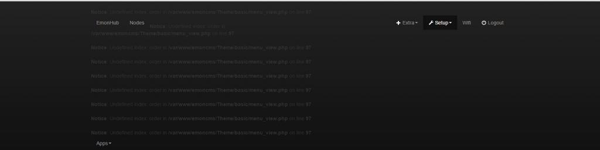
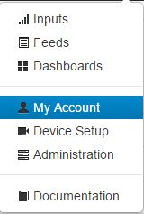
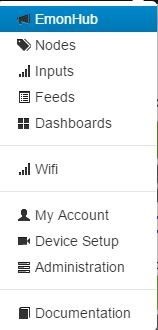
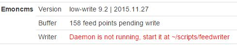

Is there now any way to checkout 9.x i have had to reinstall my eminpi from the image i backed up my database from my old install run 9.2
my current system is now back on 8.5 but this is not compatibly with my old database and i now can't find a way to get back to 9.2
Steve
Re: git checkout 9.x
v9.xversion 9.x [edited as I meant version 9.x not the branch "v9.x" !!!] is currently the default branch (called "stable") when cloned or to switch into it use "git checkout stable"Paul
Re: git checkout 9.x
The current & default emoncms git branch is 'stable' (9.x has now been merged into stable and deleted) which if not visible as an option for you, try
$ git fetch origin
to sync the list of branches to your Pi first, then as per Paul's post above.
Paul
Re: git checkout 9.x
thanks chaps \o/ that got me update all looks to be working but do have an error at the top of the page
Notice: Undefined index: order in /var/www/emoncms/Theme/basic/menu_view.php on line 97
Re: git checkout 9.x
Have you updated your database and also set your timezone in My Account.
Paul
Re: git checkout 9.x
Thanks Paul yep i had done that but i have fix it now :) i think some of the Modules needed checking out to 9.0 and a git pull but all looks good ow
But thanks for all your help
Steve
Re: git checkout 9.x
I think all the modules need changing to suit the emoncms repo, if version 9 is the default version then the default branch of each of the modules should match.
Paul
Re: git checkout 9.x
Steve, the app module by default is set at v9, and many of the others are compatible so don't need a specific v9 branch.
Which modules did you have problems with?
Paul
Re: git checkout 9.x
Hi Paul
im not sure now it was all a bit rushed :s but i did allot of messing trying to get it working before i posted for help so im not 100% happy with the install im going to take a deep breath and re-build the SD card from scratch tonight once im done i'll post back to you both letting you known the full steps in need to do to get from the base 8.5 image to 9.2 if that OK
Steve
Re: git checkout 9.x
See http://openenergymonitor.org/emon/node/11636 for how it worked for me.
Paul
Re: git checkout 9.x
ill use that as a guide for my clean install and change the
cd /var/www/emoncms git checkout 9.0
To:
cd /var/www/emoncms git checkout stable
and let the known
Steve
Re: git checkout 9.x
Steve
I've updated my post to reflect the repo changes.
Paul
Re: git checkout 9.x
Hi Paul
yep there are one or two bits that are going to need up dating
sudo service emonhub stop (Works Fine)
cd /var/www/emoncms (Works Fine)
git fetch origin (Needs Adding)
git checkout stable (Wont Work You Need To Run "git fetch origin" First)
git pull (Works Fine)
Im running the emonpi so used the:
cp default.emonpi.settings.php settings.php (Works Fine)
nano settings.php (Works Fine Noting For Me To Change)
redis-cli flushall (Works Fine)
sudo service emonhub start (Works Fine)
Then i got some errors

You need to update /var/www/emoncms/Modules/app
cd /var/www/emoncms/Modules/app (Its set to master)
9.0 is not in checkout you need to run:
git fetch origin
git checkout 9.0
git pull
Only one error left now
You need to update /var/www/emoncms/Modules/wifi
cd /var/www/emoncms/Modules/wifi (Its set to master)
9.0 is not in checkout you need to run:
git fetch origin
git checkout 9.0
git pull
That all the menu bar errors fix
But i did find i was missing nodes and emonhub from the menu

it fix nodes i had to update /var/www/emoncms/Modules/nodes
cd /var/www/emoncms/Modules/nodes (Its set to master)
9.0 is not in checkout you need to run:
git fetch origin
git checkout 9.0
git pull
it fix emonhub i had to update /var/www/emoncms/Modules/config
cd /var/www/emoncms/Modules/config (Its set to master)
9.0 is not in checkout you need to run:
git fetch origin
git checkout 9.0
git pull
Thats the menu now fixed

Theres is one last error on the admin page:

To fix this i had to:
cd /var/www/emoncms/scripts
chmon +x feedwriter (The Script Is Not Executable)
sudo ./feedwriter start
I think that's it hope it help :)
Steve
Re: git checkout 9.x
im still having problems with feedwriter script im having to run:
sudo ./feedwriter start
after a reboot as it not running at startup on its own
Re: git checkout 9.x
In /etc/init.d can you see a symlink called 'feedwriter'?
If so delete it and run:
If not - that's OK
In both cases then reinstall the feedwriter init script & reboot.
Paul
Re: git checkout 9.x
Thanks Paul
it working from boot now
Steve